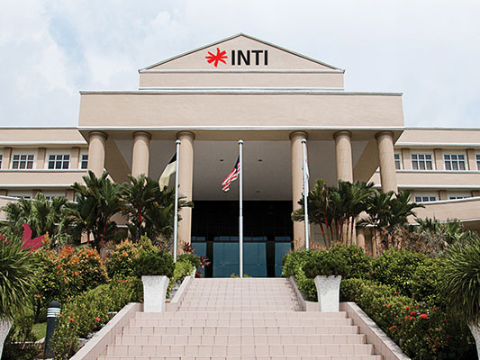

Our Campuse
-
Designed to put students in the ideal frame of mind for an education that will inspire
and mould young minds into global citizens.
- World class Academic facilities
- State-of-the-art science laboratories
- Engineering workshops
- Campus-wide WiFi coverage
- Multiple IT laboratories
- Office simulation environment
INTI International University Nilai
Serves as the flagship campus that offers industry relevant programmes across various disciplines along with a residential campus experience.
Set within 82 acres of landscaped grounds, the university is located in the vibrant town of Putra Nilai, offering all the facilities and amenities you need as you immerse in a cross-cultural learning experience.
